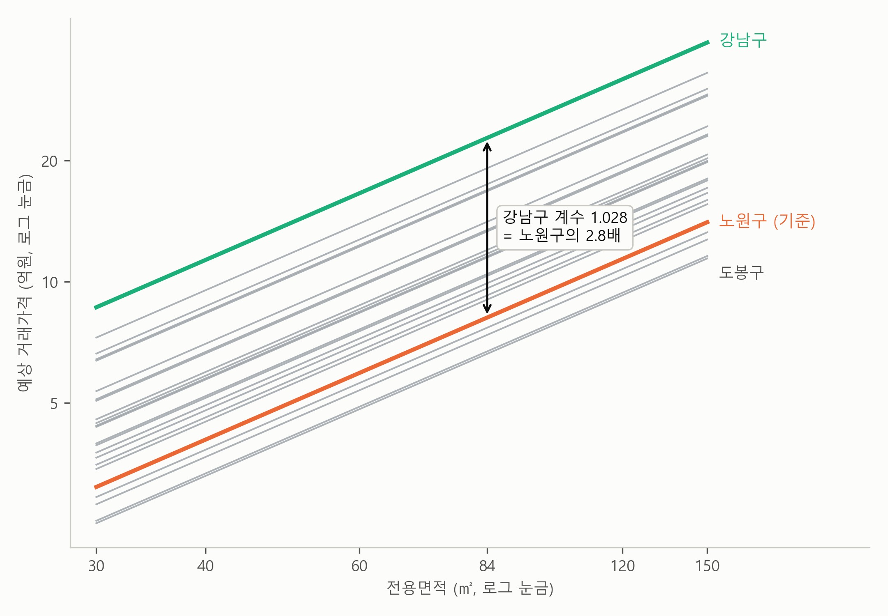
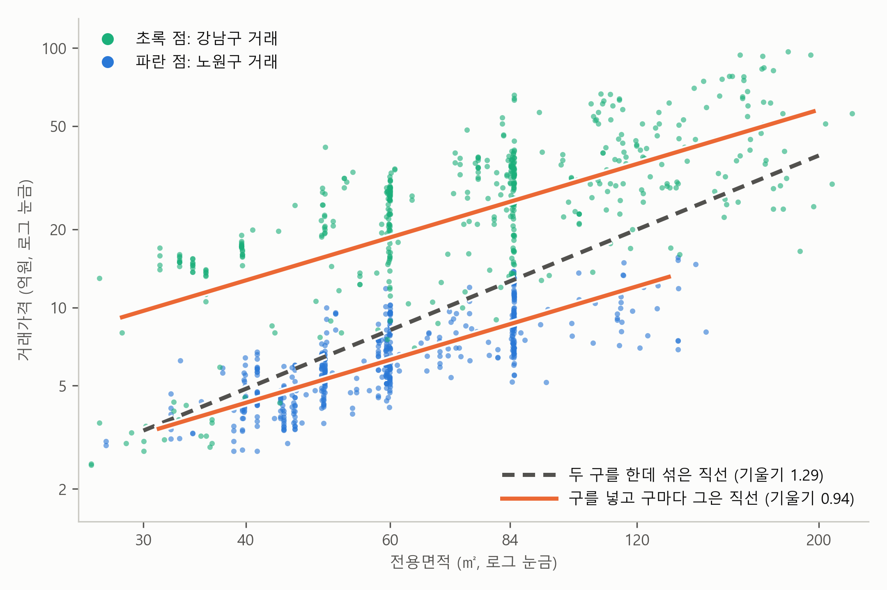

3. 숫자가 아닌 변수 — 더미 변수#
이 장 첫머리 보고서의 회귀식에는 숫자가 아닌 변수가 하나 들어 있습니다. 구입니다. 표 2-1을 다시 보면 “구: 강남구 1.032”, “구: 도봉구 −0.207” 같은 계수가 있습니다. 면적, 층, 연식은 숫자라서 회귀식에 그대로 넣을 수 있습니다. 그런데 “강남구”는 숫자가 아닌데, 어떻게 회귀식에 들어갔을까요? 그리고 강남구 계수 1.032는 어떻게 “노원구의 2.8배”가 될까요?
미리 답부터 말하면, 숫자가 아닌 변수는 켜고 끄는 스위치로 바꿔서 넣습니다. 켜지면 1, 꺼지면 0입니다. 이 절이 끝나면 표 2-1의 구 계수 24개가 어떻게 나왔는지, 그 계수를 어떻게 “몇 배”, “몇 % 높다”, “몇 % 낮다”로 읽는지 알게 됩니다.
스위치의 켜고 끄기#
방에 전등 스위치가 있다고 해 봅시다. 스위치는 켜져 있거나 꺼져 있거나 둘 중 하나입니다. 켜짐을 1, 꺼짐을 0으로 적으면, “불이 켜졌나?”라는 질문을 숫자 하나로 기록할 수 있습니다.
아파트에도 이런 질문을 던질 수 있습니다. 예를 들어 “강남구에 있는가?”라는 질문에 강남구에 있는 아파트면 1, 아니면 0을 적습니다. 숫자가 아닌 “강남구에 있는가”라는 성질을 숫자 하나로 바꾼 것이죠. 이렇게 0과 1로만 된 변수를 더미 변수(dummy variable)라고 부릅니다. 이름은 낯설지만 하는 일은 스위치 하나입니다.
숫자가 아닌 변수는 “이것인가?”를 묻는 스위치로 바꾼다. 맞으면 1, 아니면 0.
구를 1부터 25까지 번호로 넣으면 안 되는 이유#
그런데 “강남구인가?” 스위치 하나로는 강남구와 그 밖의 구, 두 묶음밖에 나누지 못합니다. 보고서의 회귀식은 25개 구를 하나하나 구별합니다. 선택지가 둘이 아니라 25개이니 스위치 하나로는 부족합니다. 가장 쉬워 보이는 방법은 구마다 번호를 붙이는 것입니다. 가령 가나다순으로, 강남구 1, 강동구 2, …, 중랑구 25처럼요. 하지만 이렇게 하면 안 됩니다.
번호를 그대로 회귀식에 넣으면, 회귀식은 그 번호를 면적이나 층처럼 크기가 있는 숫자로 읽습니다. 번호가 1 커질 때마다 가격이 일정한 비율로 오르거나 내린다고 가정하는 것이죠. 그런데 가나다순으로 붙인 번호에는 그런 뜻이 없습니다. 강동구(2)가 강남구(1)보다 “1만큼 더한 구”도 아니고, 중랑구(25)가 강남구보다 “24만큼 더한 구”도 아닙니다. 가나다순이 아니라 다른 기준으로 번호를 붙이면 결과가 또 달라지는, 의미 없는 계산이 됩니다.
구마다 스위치 하나 — 더미 변수 만들기#
그래서 구에는 스위치를 여러 개 답니다. 앞에서 본 “강남구인가?”에 이어 “서초구인가?”, “송파구인가?”…처럼 구마다 스위치를 하나씩 만들고, 거래가 그 구에서 일어났으면 그 스위치만 켭니다. 거래마다 구는 하나이므로 켜지는 스위치도 하나뿐입니다. 노원구 거래라면 켜지는 스위치가 없는데, 그 까닭은 바로 아래에서 봅니다. 표 3-1은 거래 네 건으로 그 모습을 보인 것입니다.
표 3-1. 구를 더미 변수로 바꾼 모습 (거래 네 건의 예, 구 더미 24개 중 일부만 표시)
거래 |
구 |
강남구 |
서초구 |
… |
도봉구 |
|---|---|---|---|---|---|
거래 1 |
노원구 |
0 |
0 |
… |
0 |
거래 2 |
강남구 |
1 |
0 |
… |
0 |
거래 3 |
도봉구 |
0 |
0 |
… |
1 |
거래 4 |
서초구 |
0 |
1 |
… |
0 |
표에서 보듯이 거래 1은 모든 구 스위치가 꺼져 있습니다. 노원구에는 스위치를 따로 달지 않았기 때문입니다. 노원구는 기준 구입니다. 모든 구 스위치가 꺼져 있으면 노원구 거래라는 뜻이고, 다른 구의 계수는 모두 “노원구와 비교해 얼마나 다른가”를 말합니다. 그래서 구는 다 합쳐서 25개인데 구 더미는 24개이고, 보고서는 회귀 결과에 “구 더미 24개 (기준: 노원구)”라고 적었습니다.
기준을 하나 비워 두는 것은 비교에 출발점이 있어야 하기 때문입니다. 키를 측정할 때 바닥을 0으로 삼듯이, 구의 차이를 말하려면 “어느 구에 비해”가 정해져 있어야 합니다. 노원구를 기준으로 고른 것은 단순회귀분석 장의 무대가 노원구였기 때문이고, 다른 구를 골라도 됩니다. 기준을 바꾸면 어떻게 되는지는 뒤에서 확인합니다.
더미의 계수는 직선의 높이 차이#
이제 구 더미가 회귀식에서 무슨 일을 하는지 보겠습니다. 다른 변수는 잠시 빼고, 면적과 구 더미만 남긴 회귀식을 써 보면 이렇습니다.
앞 절의 뺄셈을 그대로 해 봅니다. 면적이 같은 노원구 아파트와 강남구 아파트가 있습니다. 노원구 아파트는 구 스위치가 모두 꺼져 있으니 구 더미 항이 전부 0이고, 강남구 아파트는 강남구 스위치만 켜져 있으니 \(d_{\text{강남}}\) 하나만 남습니다. 둘을 빼면 \(a\)와 \(b \times \text{로그면적}\)이 지워지고 이것만 남습니다.
즉 구 더미의 계수 \(d_{\text{강남}}\)은 “다른 조건은 똑같고 구만 다른 두 아파트의 평균적인 (로그)가격 차이”입니다. 앞 절의 계수 읽는 법이 여기서도 그대로 통합니다.
이것을 그림으로 보면 더 분명합니다. 그림 3-1은 보고서의 회귀식에서 층과 연식을 하나로 고정해 두고(10층, 26년) 면적만 움직이며 25개 구의 예상 가격을 그린 것입니다.

그림 3-1. 보고서의 회귀식으로 그린 25개 구의 예상 가격(10층, 26년). 두 축 모두 로그 눈금이다. 주황 직선이 기준인 노원구, 초록 직선이 강남구, 회색 직선이 나머지 23개 구다.
그림에서 보듯이 25개의 직선은 모두 평행합니다. 기울기는 면적 탄력성 0.94로 모두 같고, 높이만 다릅니다. 그 높이 차이가 바로 구 더미의 계수입니다. 노원구 직선과 강남구 직선 사이의 세로 간격이 1.032이고, 이 간격은 30㎡에서 보든 150㎡에서 보든 똑같습니다. 구 더미는 직선 기울기를 그대로 놔둔 채 위아래로만 옮깁니다. 즉 절편만 바뀌는 것입니다.
보고서의 그림 왼쪽 패널은 이 25개 직선의 높이를 “노원구의 몇 배”로 바꿔 한 줄씩 그린 것입니다. 그림 3-1에서 높게 위치한 직선일수록 보고서의 그림 왼쪽 패널에서 점이 오른쪽에 있습니다.
계수를 “몇 배”로 읽기 — 1.032가 2.8배가 되는 계산#
남은 질문은 1.032가 어떻게 2.8배가 되느냐입니다. 회귀식의 왼쪽이 가격이 아니라 로그가격이므로, 계수 1.032는 로그가격의 차이입니다. 이것을 가격의 차이로 되돌려야 합니다.
계수 × 100%로 읽는 근사는 계수가 작을 때만 맞습니다(2절의 “로그 다시 보기”). 그런데 스위치는 0에서 1로 한 번에 뛰는 변화이고, 그때의 계수도 1.032처럼 큽니다.
정확한 계산은 이렇습니다. 로그가격의 차이가 \(d\)이면, 가격은 \(e^d\)배 차이 납니다. \(e\)는 약 2.718인 수이고, 계산은 계산기나 AI에게 맡기면 됩니다.
그래서 강남구 아파트는 같은 조건의 노원구 아파트보다 2.8배 비쌉니다. 퍼센트로 말하면 181% 비싼 것입니다. 근사(계수 × 100%)로는 103%가 나와, 실제보다 한참 작습니다.
계수가 음수일 때도 마찬가지입니다. 도봉구의 계수 −0.207은 근사적으로는 가격이 21% 낮다는 뜻이지만, 정확히는 19% 낮습니다(\(e^{-0.207}\) ≈ 0.81, 즉 노원구의 0.81배). 표 2-1이 강남구를 “2.81배”, 도봉구를 “0.81배”로 적은 것은 모두 정확한 값입니다.
💡 팁: 로그가격의 계수를 퍼센트나 배로 바꿀 때는 AI에게 “로그 계수를 정확한 퍼센트로 바꿔 줘”라고 부탁하면 됩니다. 계수가 대략 −0.1에서 0.1 사이일 때만 계수 × 100%로 근사해도 충분합니다.
기준을 바꾸면#
노원구를 기준으로 고른 것은 편의상의 선택이었습니다. 기준을 다른 구로 바꾸면 무엇이 달라질까요? 기준을 송파구로 바꿔 회귀분석을 다시 해 봤습니다. 표 3-2가 그 결과입니다.
표 3-2. 기준 구를 바꿔 다시 한 회귀분석 (구 계수 일부)
기준 노원구 |
기준 송파구 |
|
|---|---|---|
강남구 |
1.032 |
0.260 |
서초구 |
0.861 |
0.089 |
송파구 |
0.772 |
(기준) |
노원구 |
(기준) |
−0.772 |
면적, 층 등 다른 계수 |
변화 없음 |
변화 없음 |
\(R^2\) |
0.719 |
0.719 |
표에서 보듯이 바뀌는 것은 구 계수뿐입니다. 면적, 층 같은 다른 계수와 \(R^2\)은 그대로입니다. 그리고 구 계수도 출발점만 옮겨졌을 뿐, 구끼리의 차이는 그대로입니다. 서초구와 송파구의 차이는 노원구 기준에서 0.861 − 0.772 = 0.089이고, 송파구를 기준으로 하면 서초구의 계수가 바로 0.089입니다. 키를 바닥에서 측정하든 의자 위에서 측정하든 두 사람의 키 차이가 같은 것과 같습니다. 그러니 기준을 바꿔 다시 분석하지 않아도, 어느 두 개의 구든 표 2-1에서 두 계수의 차이를 보면 비교할 수 있습니다. 서초구는 같은 조건의 송파구보다 \(e^{0.089}\) ≈ 1.09배, 즉 약 9% 비쌉니다.
노원구와 차이가 없는 구#
표 2-1의 구 계수 24개를 \(t\)값까지 보면, 눈에 띄는 구가 하나 있습니다. 은평구(계수 0.006, \(t\)값 0.8)입니다. 단순회귀분석 장에서 \(t\)값은 추정값이 0에서 표준오차의 몇 배만큼 떨어져 있는가이고, \(t\)값이 2만 넘어도 “아무 관계가 없는 세상에서 이만한 값이 우연히 나올 확률”, 즉 \(p\)값이 5% 아래로 떨어진다고 했습니다. 거꾸로 말하면 \(t\)값이 −2와 2 사이이면 \(p\)값이 5%보다 커서, 아무 차이가 없는 세상에서도 우연히 나올 만한 크기라는 뜻입니다. 은평구의 \(p\)값은 0.42입니다. 단순회귀분석 장에서 소개한 말로 하면, 은평구의 계수는 통계적으로 유의하지 않습니다. 즉 다른 조건이 같으면 은평구 아파트가 노원구 아파트와 가격이 다르다고 말할 근거가 없습니다. 계수가 1.01배로 거의 1인 것도 같은 이야기입니다.
바로 아래의 구로구도 계수가 0.98배로 거의 1이지만, \(t\)값이 −2.3이라 \(p\)값이 0.02입니다. 이쪽은 통계적으로 유의합니다. 노원구보다 가격이 2%쯤 낮아 차이는 작지만, 우연으로 보기는 어렵다는 뜻입니다. 단순회귀분석 장에서 “\(p\)값이 작다는 것은 관계가 있다는 뜻이지, 관계가 크다는 뜻이 아니다”라고 했던 것과 같은 이야기, 즉 통계적 유의성과 경제적 중요성의 차이입니다. 차이가 작다는 것과 차이가 없다는 것은 다른 말입니다.
더미 변수의 \(t\)값과 \(p\)값은 이렇게 “기준과 차이가 있는가”를 묻습니다. 차이가 얼마나 큰지는 계수가 말해 주므로, 크기는 “몇 배”로 읽고 \(t\)값과 \(p\)값으로는 그 차이를 우연으로 볼 수 있는지를 따집니다. 은평구를 뺀 23개 구는 \(t\)값이 −2와 2 사이를 벗어나므로, 노원구와 가격 수준이 다르다고 말할 수 있습니다.
구를 넣으면 면적의 계수도 달라진다#
구 더미를 넣으면 구의 계수만 생기는 것이 아닙니다. 함께 들어 있던 다른 계수도 달라질 수 있습니다. 표 2-1의 면적 탄력성은 0.94인데, 같은 자료로 면적 하나만 넣어 회귀분석을 하면 1.04가 나오고, 여기에 구를 함께 넣으면 0.91로 내려갑니다. 앞 절에서 층에 면적과 다른 변수를 함께 넣자 층의 계수가 1.9%에서 1.1%로 작아졌던 것과 같은 일입니다.
두 구만 놓고 보면 이유가 잘 보입니다. 그림 3-2는 노원구와 강남구의 거래를 함께 그린 것입니다.

그림 3-2. 노원구(파랑)와 강남구(초록)의 거래(각 500건 무작위). 회색 점선은 구를 넣지 않고 두 구를 한데 섞어 그은 직선, 주황 직선 두 개는 면적과 구 더미를 함께 넣은 회귀식이 구마다 그은 직선이다. 두 축 모두 로그 눈금이다.
그림에서 보듯이 강남구 점들은 위쪽에 모여 있고, 오른쪽으로 더 퍼져 있습니다. 강남구 아파트가 같은 면적에서 훨씬 비싼 데다, 넓은 아파트도 더 많기 때문입니다(평균 면적 85㎡ 대 63㎡). 그래서 두 구를 한데 섞어 직선을 그으면, 직선은 왼쪽 아래에 모인 노원구 점들에서 오른쪽 위에 모인 강남구 점들로 가파르게 올라갑니다. 두 축이 모두 로그 눈금이라 직선의 기울기가 곧 면적 탄력성인데, 1.29입니다. 이 기울기 안에는 “전용면적이 넓어지는 효과”와 함께 “노원구에서 강남구로 넘어가는 효과”가 섞여 있습니다.
구 더미를 넣으면, 그림 3-1에서 본 것처럼 강남구 직선은 노원구 직선을 위로 평행 이동한 직선이 됩니다. 구의 차이는 두 직선의 높이 차이가 맡고, 기울기에는 같은 구 안에서 면적이 넓어지는 몫만 남아 0.94가 됩니다. 앞 절의 말로 하면, 구가 빠진 회귀식에서는 면적이 구의 몫까지 떠안는 누락 변수 편향이 생긴 것입니다. 서울 25개 구 전체에서도 넓은 아파트가 많은 구일수록 대체로 비싼 구여서, 구를 넣자 면적 탄력성이 1.04에서 0.91로 내려갔습니다. 여기에 층과 연식을 더해도 0.90으로 거의 그대로입니다. 그런데 연식을 제곱한 변수(연식²)까지 넣은 표 2-1의 회귀식에서는 0.94로 조금 다시 오릅니다. 연식²이 면적 탄력성을 끌어올리는 까닭은 이 장의 마지막 절에서 봅니다.
요약 — 이 절의 물음과 답
“강남구”는 숫자가 아닌데, 어떻게 회귀식에 들어갔을까? “강남구인가?”를 묻는 스위치로 바꿔, 강남구 거래면 1, 아니면 0을 적어 넣었다. 이렇게 0과 1로만 된 변수를 더미 변수라고 한다. 구마다 스위치를 하나씩 달되 기준 구인 노원구에는 달지 않아서 구 더미는 24개이고, 구 계수는 모두 노원구와 비교해 얼마나 다른가를 말한다.
구 더미의 계수는 무엇을 말할까? 다른 조건은 똑같고 구만 다른 두 아파트의 평균적인 (로그)가격 차이다. 구 더미는 직선의 기울기는 그대로 둔 채 위아래로만 옮기므로, 그림으로 보면 25개 구의 직선은 모두 평행하고 구 계수는 그 직선들의 높이 차이다.
강남구 계수 1.032는 어떻게 “노원구의 2.8배”가 될까? 로그가격의 차이가 \(d\)이면 가격은 \(e^d\)배 차이 나므로, 1.032는 \(e^{1.032}\) ≈ 2.81배가 된다. 계수 × 100%로 읽는 근사는 계수가 작을 때만 맞고, 1.032처럼 큰 계수에서는 실제보다 한참 작게 나온다.
남는 질문#
그림 3-1의 직선 25개는 모두 평행했습니다. 구 더미는 직선을 위아래로만 옮길 뿐 기울이지 않기 때문입니다. 그 말은 회귀식이 “면적 1%의 효과”, “한 층의 효과”가 어느 구에서나 똑같다고 가정한다는 뜻이기도 합니다. 정말 그럴까요? 강남구의 한 층과 도봉구의 한 층이 같은 값일까요? 다음 절에서는 이 가정을 풀어 봅니다.